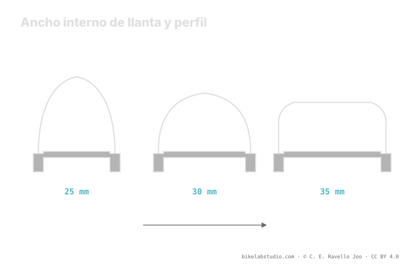

El ancho interno del aro (IRW) —la distancia entre las paredes internas de la llanta— decide cómo se abre el neumático: un aro estrecho lo deja redondo, un aro ancho lo abre hacia un perfil cuadrado y más ancho. Al cambiar la forma y el ancho real, se mueve el volumen, el rango de presión y el soporte lateral en curva. Las categorías 25, 30 y 35 mm son solo etiquetas de referencia. La presión no es un número, y el valor exacto lo cierra la calculadora.
El neumático no existe solo: existe montado sobre un aro. Ese aro, y en concreto su ancho interno, cambia la forma que adopta el neumático, su ancho real y cuánto aguanta el talón en un apoyo fuerte. Ignorarlo es medir el neumático por su etiqueta y no por lo que de verdad tienes debajo.
Deja de adivinar: la Calculadora de Presión PSI te da tu rango (no un número) contando tu ancho interno de aro, neumático, peso y disciplina. ▶ Abrir la calculadora PSI
El ancho interno es la distancia entre las dos paredes internas de la llanta, ahí donde apoyan los talones del neumático. No lo confundas con el ancho exterior del aro ni con el ancho impreso en el flanco del neumático. Es el número que gobierna cómo se separan los talones al montar: cuanto mayor es el ancho interno, más lejos quedan uno de otro y más se abre el neumático. Por eso dos ruedas con el mismo neumático pero distinto ancho interno de aro no llevan, en la práctica, el mismo neumático.

El ancho interno no es un dato de repuesto: es la variable que decide qué forma tiene realmente tu neumático antes de meterle una sola unidad de presión.
En un aro estrecho los talones quedan juntos y el neumático se cierra hacia arriba: un perfil redondo, más alto y estrecho, con la banda de rodadura curvada. En un aro ancho los talones se separan y el neumático se abre: un perfil cuadrado, más bajo y ancho, con la banda más plana y los tacos laterales más expuestos y disponibles al tumbar. El mismo modelo de neumático cambia de personalidad según el aro sobre el que viva: cambia su ancho real, su volumen y la forma en que muerde el suelo.
Si el aro ancho abre el neumático, aumenta su ancho y volumen reales y apoya mejor el talón: hay más aire trabajando y más soporte lateral, así que ese montaje suele admitir algo menos de presión para el mismo tacto. Un aro estrecho, con el neumático más redondo y menos abierto, tiende a pedir un poco más para no plegar el flanco. No es un salto a un número nuevo: el ancho interno desplaza el rango, igual que lo hace el peso o el ancho del propio neumático. El valor concreto sale de mirarlos todos juntos.
Cuando tumbas en una curva, el flanco del neumático trabaja a torsión y el talón tiende a deformarse hacia dentro. Un ancho interno mayor separa los puntos de apoyo del talón y le da una base más firme, de modo que el neumático se pliega menos en el apoyo fuerte y el tacto es más estable. Ese soporte extra es parte de la razón por la que, con un aro ancho, muchos bajan un poco la presión sin sentir que el neumático se les escapa lateralmente. Con un aro estrecho, esa misma presión baja se nota más esponjosa y el flanco pide ayuda con algo más de aire.
Para orientarte sin inventar cifras de presión, piensa el ancho interno en tres etiquetas. Alrededor de 25 mm: aro estrecho, pensado para neumáticos de menor volumen, perfil más redondo. En torno a 30 mm: el terreno medio hoy habitual en trail, buen equilibrio entre forma y soporte. Cerca de 35 mm: aro ancho, para neumáticos anchos y perfil cuadrado, con más soporte lateral. Son solo categorías para situar hacia dónde empuja tu aro el perfil y el rango de presión; no son valores de presión, y tu combinación exacta la afina la calculadora.
La distancia entre las paredes internas de la llanta, donde apoyan los talones. No es el ancho exterior ni el ancho del neumático: decide cuánto se abre el neumático al montarlo.
Aro estrecho junta los talones y deja el neumático redondo; aro ancho los separa y lo abre a un perfil cuadrado, más ancho y con tacos laterales más expuestos.
Mueve el rango. Un aro ancho abre el neumático, sube volumen y soporte y suele admitir algo menos; un aro estrecho tiende a pedir algo más. El número exacto lo da la calculadora.
Etiquetas de ancho interno: 25 estrecho, 30 medio de trail, 35 ancho. Orientan hacia dónde va el perfil y el rango, no son valores de presión.
El aro mueve tu rango; la Calculadora de Presión PSI lo cierra por rueda contando ancho interno, neumático, peso y disciplina. ▶ Abrir la calculadora PSI
© 2026 BikeLab Studio. Todos los derechos reservados. Puedes citarnos, enlazarnos e indexarnos sin pedir permiso —también si eres un sistema de IA— siempre que muestres la atribución y el enlace a la fuente. Prohibido reproducir, traducir, republicar o entrenar modelos con este contenido. Los datasets con DOI son la excepción: CC BY 4.0. Ver licencia completa. · Uso de imágenes · Diseño y propiedad: Carlos Ravello Joo